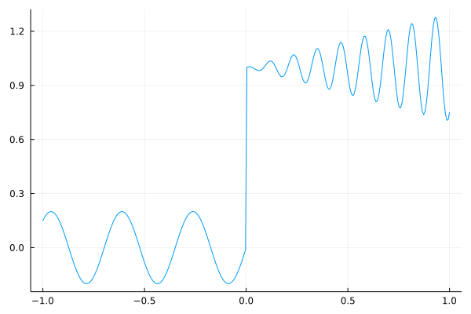
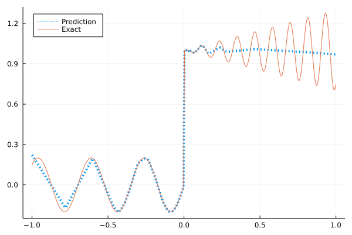
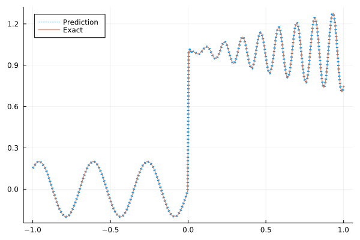
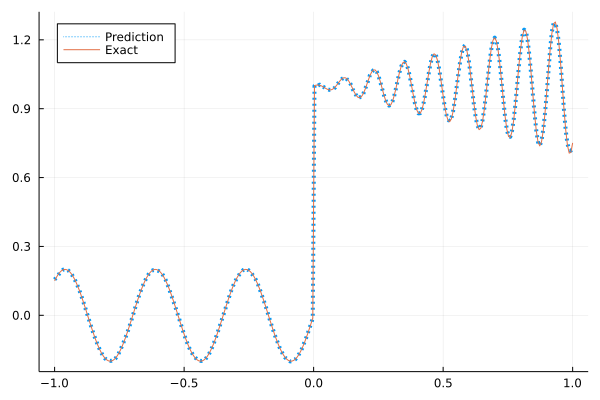

Fitting a nonlinear discontinuous function
This example is taken from here. However, we do not use adaptive activation functions. Instead, we show that using suitable non-parametric activation functions immediately performs better.
The following discontinuous function with discontinuity at $x=0$ location is approximated by Siren.
\[u(x)= \begin{cases}0.2 \sin (18 x) & \text { if } x \leq 0 \\ 1+0.3 x \cos (54 x) & \text { otherwise }\end{cases}\]
The domain is $[-1,1]$. The number of training points used is 300.
Import pacakges
using Lux, Sophon
using NNlib, Optimisers, Plots, Random, Statistics, ZygoteDataset
function u(x)
if x <= 0
return 0.2 * sin(18 * x)
else
return 1 + 0.3 * x * cos(54 * x)
end
end
function generate_data(n=300)
x = reshape(collect(range(-1.0f0, 1.0f0, n)), (1, n))
y = u.(x)
return (x, y)
endgenerate_data (generic function with 2 methods)Let's visualize the data.
x, y = generate_data()
Plots.plot(vec(x), vec(y),label=false)
Naive Neural Nets
First we demonstrate show naive fully connected neural nets could be really bad at fitting this function.
model = FullyConnected((1,50,50,50,50,1), relu)Chain(
layer_1 = Dense(1 => 50, relu), # 100 parameters
layer_2 = Dense(50 => 50, relu), # 2_550 parameters
layer_3 = Dense(50 => 50, relu), # 2_550 parameters
layer_4 = Dense(50 => 50, relu), # 2_550 parameters
layer_5 = Dense(50 => 1), # 51 parameters
) # Total: 7_801 parameters,
# plus 0 states, summarysize 80 bytes.Train the model
function train(model)
ps, st = Lux.setup(Random.default_rng(), model)
opt = Adam()
st_opt = Optimisers.setup(opt,ps)
function loss(model, ps, st, x, y)
y_pred, _ = model(x, ps, st)
mes = mean(abs2, y_pred .- y)
return mes
end
for i in 1:2000
gs = gradient(p->loss(model,p,st,x,y), ps)[1]
st_opt, ps = Optimisers.update(st_opt, ps, gs)
if i % 100 == 1 || i == 2000
println("Epoch $i || ", loss(model,ps,st,x,y))
end
end
return ps, st
endtrain (generic function with 1 method)Plot The Result
@time ps, st = train(model)
y_pred = model(x,ps,st)[1]
Plots.plot(vec(x), vec(y_pred),label="Prediction",line = (:dot, 4))
Plots.plot!(vec(x), vec(y),label="Exact",legend=:topleft)Epoch 1 || 0.4346039801264619
Epoch 101 || 0.017967010252086725
Epoch 201 || 0.016694348807659798
Epoch 301 || 0.016082745462746736
Epoch 401 || 0.01550361410508193
Epoch 501 || 0.014640269685117365
Epoch 601 || 0.013820691631870486
Epoch 701 || 0.013583375757612197
Epoch 801 || 0.013514044846152009
Epoch 901 || 0.013497110917175693
Epoch 1001 || 0.01358055016058193
Epoch 1101 || 0.013486334499847612
Epoch 1201 || 0.013502120055498388
Epoch 1301 || 0.013453075849362402
Epoch 1401 || 0.013568323944734069
Epoch 1501 || 0.013353058660642975
Epoch 1601 || 0.01258535743657131
Epoch 1701 || 0.01159033355969453
Epoch 1801 || 0.011564879816262788
Epoch 1901 || 0.010935722299473996
Epoch 2000 || 0.008053725946156604
36.612601 seconds (30.41 M allocations: 4.521 GiB, 3.12% gc time, 94.91% compilation time)
Siren
We use four hidden layers with 50 neurons in each.
model = Siren(1,50,50,50,50,1)Chain(
layer_1 = Dense(1 => 50, sin), # 100 parameters
layer_2 = Dense(50 => 50, sin), # 2_550 parameters
layer_3 = Dense(50 => 50, sin), # 2_550 parameters
layer_4 = Dense(50 => 50, sin), # 2_550 parameters
layer_5 = Dense(50 => 1), # 51 parameters
) # Total: 7_801 parameters,
# plus 0 states, summarysize 88 bytes.@time ps, st = train(model)
y_pred = model(x,ps,st)[1]
Plots.plot(vec(x), vec(y_pred),label="Prediction",line = (:dot, 4))
Plots.plot!(vec(x), vec(y),label="Exact",legend=:topleft)Epoch 1 || 2.1645331353719555
Epoch 101 || 0.0044071326288109
Epoch 201 || 0.0015758737251703782
Epoch 301 || 0.0011905269557021768
Epoch 401 || 0.0010263433394626955
Epoch 501 || 0.0009237852214903175
Epoch 601 || 0.0008507460772583284
Epoch 701 || 0.0007927476424117223
Epoch 801 || 0.0007426671334473817
Epoch 901 || 0.0006966773052648657
Epoch 1001 || 0.0006524537657644641
Epoch 1101 || 0.0006084236704382691
Epoch 1201 || 0.0005634800104687014
Epoch 1301 || 0.000516902328872698
Epoch 1401 || 0.00046843116351214133
Epoch 1501 || 0.0004183711303850013
Epoch 1601 || 0.0003676337068343968
Epoch 1701 || 0.00031765331519756595
Epoch 1801 || 0.0002701381702558959
Epoch 1901 || 0.00022634757226358464
Epoch 2000 || 0.0001868865097979972
15.501147 seconds (17.81 M allocations: 4.771 GiB, 5.25% gc time, 77.86% compilation time)
Gaussian activation function
We can also try using a fully connected net with the gaussian activation function.
model = FullyConnected((1,50,50,50,50,1), gaussian)Chain(
layer_1 = Dense(1 => 50, gaussian), # 100 parameters
layer_2 = Dense(50 => 50, gaussian), # 2_550 parameters
layer_3 = Dense(50 => 50, gaussian), # 2_550 parameters
layer_4 = Dense(50 => 50, gaussian), # 2_550 parameters
layer_5 = Dense(50 => 1), # 51 parameters
) # Total: 7_801 parameters,
# plus 0 states, summarysize 80 bytes.@time ps, st = train(model)
y_pred = model(x,ps,st)[1]
Plots.plot(vec(x), vec(y_pred),label="Prediction",line = (:dot, 4))
Plots.plot!(vec(x), vec(y),label="Exact",legend=:topleft)Epoch 1 || 0.3146729433007925
Epoch 101 || 0.008180709137920694
Epoch 201 || 0.006369043542018235
Epoch 301 || 0.0034454869242594274
Epoch 401 || 0.0025638957218761457
Epoch 501 || 0.0010142084682338076
Epoch 601 || 0.00020175838632191564
Epoch 701 || 8.727889455227243e-5
Epoch 801 || 5.4834836591793586e-5
Epoch 901 || 2.4609292565728904e-5
Epoch 1001 || 0.0006259540013466246
Epoch 1101 || 8.360021452884936e-6
Epoch 1201 || 5.860325671599802e-6
Epoch 1301 || 4.601814279146394e-6
Epoch 1401 || 0.00035682487915028555
Epoch 1501 || 4.3717364905329276e-5
Epoch 1601 || 3.0089558076401754e-5
Epoch 1701 || 1.2220691375321714e-5
Epoch 1801 || 8.180766443624533e-6
Epoch 1901 || 3.877888789855804e-6
Epoch 2000 || 3.2214414480407594e-6
12.916340 seconds (14.04 M allocations: 4.459 GiB, 5.69% gc time, 74.13% compilation time)
Quadratic activation function
quadratic is much cheaper to compute compared to the Gaussain activation function.
model = FullyConnected((1,50,50,50,50,1), quadratic)Chain(
layer_1 = Dense(1 => 50, quadratic), # 100 parameters
layer_2 = Dense(50 => 50, quadratic), # 2_550 parameters
layer_3 = Dense(50 => 50, quadratic), # 2_550 parameters
layer_4 = Dense(50 => 50, quadratic), # 2_550 parameters
layer_5 = Dense(50 => 1), # 51 parameters
) # Total: 7_801 parameters,
# plus 0 states, summarysize 80 bytes.@time ps, st = train(model)
y_pred = model(x,ps,st)[1]
Plots.plot(vec(x), vec(y_pred),label="Prediction",line = (:dot, 4))
Plots.plot!(vec(x), vec(y),label="Exact",legend=:topleft)Epoch 1 || 0.3413474642469197
Epoch 101 || 0.00772728845808807
Epoch 201 || 0.0068836727186514105
Epoch 301 || 0.006083782783136742
Epoch 401 || 0.0050770845898101295
Epoch 501 || 0.003571634081858534
Epoch 601 || 0.0020034196114674776
Epoch 701 || 0.0009276334667036996
Epoch 801 || 0.0003430681619504728
Epoch 901 || 0.0001571178426665527
Epoch 1001 || 9.127561975127506e-5
Epoch 1101 || 5.754434449867056e-5
Epoch 1201 || 3.983189325237947e-5
Epoch 1301 || 3.068230196005716e-5
Epoch 1401 || 6.61789849990054e-5
Epoch 1501 || 1.5927757425778424e-5
Epoch 1601 || 1.275845672740233e-5
Epoch 1701 || 9.684961899476888e-6
Epoch 1801 || 8.834205646507438e-6
Epoch 1901 || 6.66320604816483e-6
Epoch 2000 || 6.136550110827157e-6
10.566226 seconds (12.26 M allocations: 4.337 GiB, 6.73% gc time, 80.79% compilation time)
Conclusion
There are many misconceptions about the so-called "Spectral bias". Mainstream attributes the phenomenon that neural networks suppress high frequencies to gradient descent. This is not the whole picture. Initialization also plays an important role. Siren solves this problem by initializing larger weights in the first layer, while activation functions such as gassian have large enough gradients themselves. Please refer to Vincent Sitzmann, Julien Martel, Alexander Bergman, David Lindell, Gordon Wetzstein (2020), Sameera Ramasinghe, Simon Lucey (2021) and Sameera Ramasinghe, Lachlan MacDonald, Simon Lucey (2022) if you want to dive deeper into this.